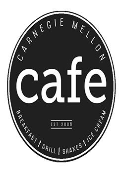

Dining Options

Carnegie Mellon Cafe
The CM Café is an American diner with a twist of gourmet flair! Enjoy hot breakfast served all day, salmon black bean tacos, almond fried brie, wraps and flatbreads. Also, be sure to save room for premium hand-dipped ice cream, signature sundaes, and milkshakes.
iNoodle
Carnegie Mellon's newest authentic Asian cuisine concept, iNoodle features an open kitchen environment; improved traffic flow for ordering, check out, and pick up; customizable, made-to-order meals; bubble tea; grab-n-go items; and pre-ordering with GET Food.